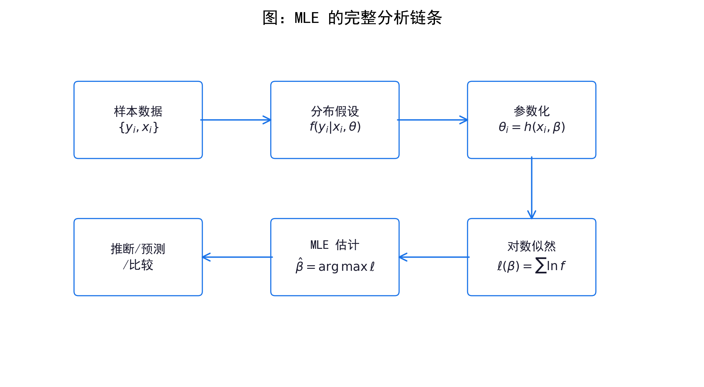
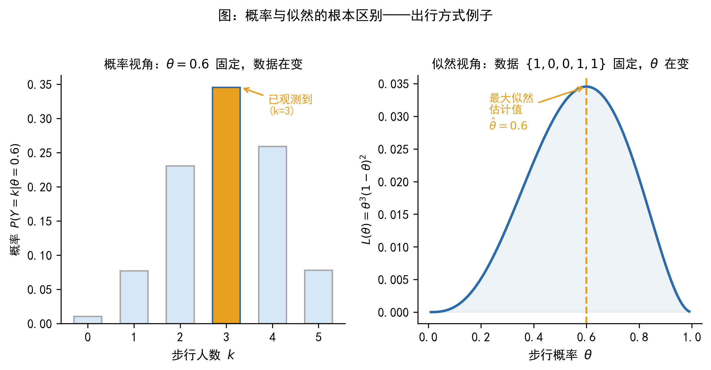
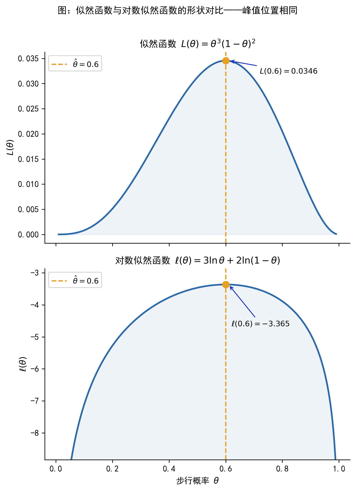
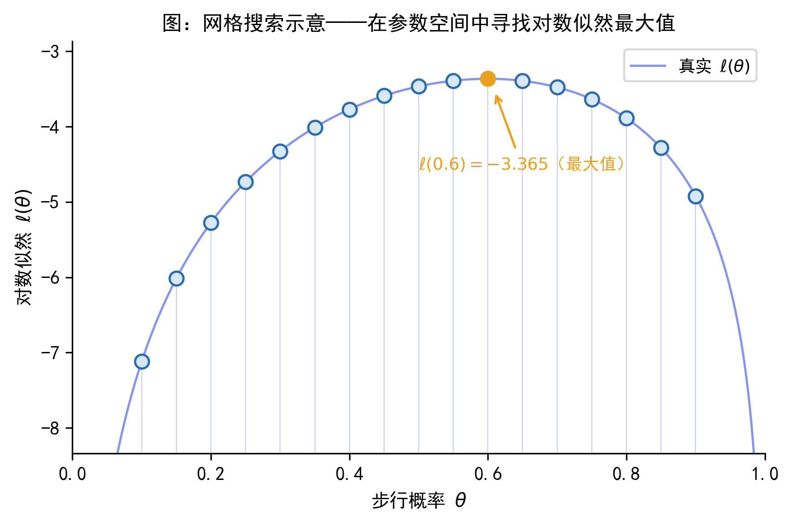
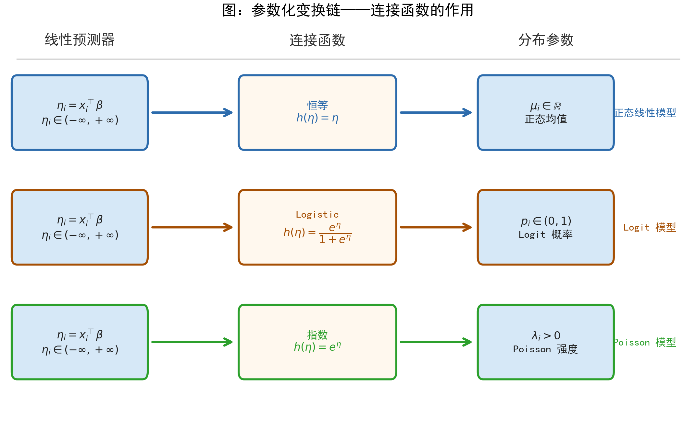
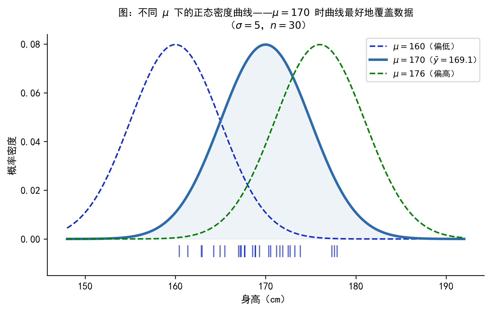
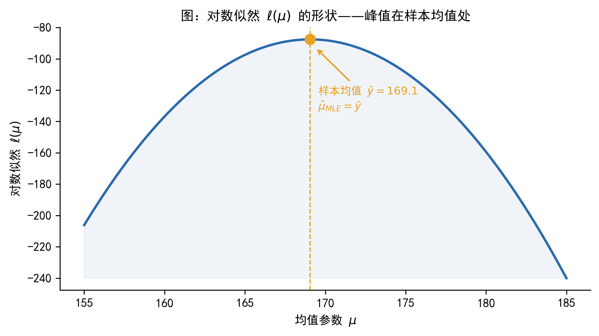
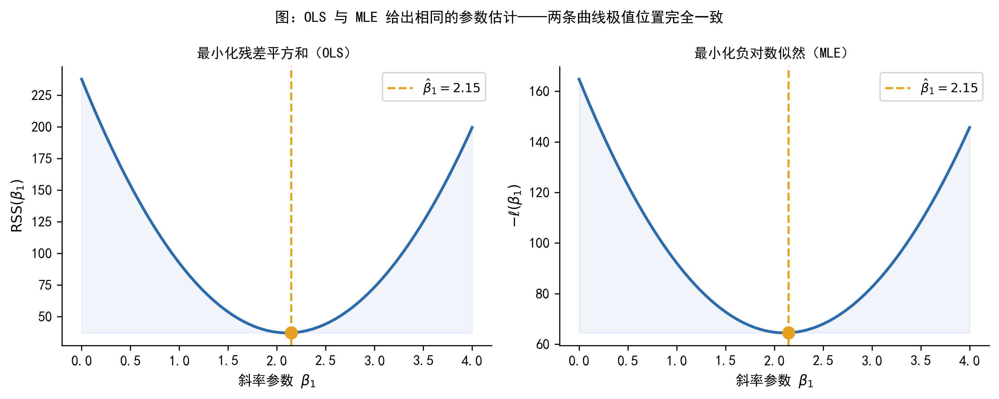

43 最大似然估计 (MLE)
43.1 导言
学过线性回归的同学可能都有这样的经历：拿到一份数据，建好模型，用 OLS 一敲，系数就出来了。这套流程非常顺畅，以至于我们很少停下来思考一个问题——如果因变量不是连续的，OLS 还适用吗？
比如，你想预测某位客户是否会违约（结果只有「是」和「否」两种），或者想分析某支股票在一个月内被分析师发布研报的次数（结果是 0、1、2、3……这样的整数）。把 OLS 硬套上去，给出的预测值可能是 1.3 或者 -0.2——这显然不是合格的「概率」，也不是合法的「次数」。
这类问题在金融和经济学研究中极为常见。而解决它们的核心工具，几乎都指向同一种估计方法：最大似然估计（Maximum Likelihood Estimation，MLE）。
本章的目标不是带大家推导公式，也不是要大家自己编程实现 MLE。我们的目标是建立一条完整的分析链条：
\[ \text{样本数据} \;\rightarrow\; \text{分布假设} \;\rightarrow\; \text{参数化} \;\rightarrow\; \text{似然函数} \;\rightarrow\; \hat{\theta}_{MLE} \;\rightarrow\; \text{推断与预测} \]
读完这一章，你应当能够理解「Logit 模型用 MLE 估计」这句话背后的逻辑，能够看懂软件输出中的 Log-Likelihood、LR chi2、AIC 等指标，也能对后续将要学习的 Probit、Tobit、Poisson、Heckman 等模型有一个统一的认识框架。
本章按「动机 → 概念 → 例子 → 流程 → 读懂输出 → 注意事项」逐步推进，建议顺序阅读前六节；第七、八节在遇到实际软件操作时按需查阅。
- 理解「Logit 模型用 MLE 估计」是什么意思
- 看懂 Python/Stata 输出中的
Log-Likelihood、LR chi2、AIC - 理解边际效应（marginal effect）和预测概率（predicted probability）是从哪里来的
- 为后续 Probit、Tobit、Poisson、Heckman 等模型的学习做好准备
43.2 为什么需要最大似然估计
43.2.1 OLS 的舒适区与局限
线性回归是大多数人接触计量经济学的第一站。它的基本形式是：
\[ y_i = x_i^\top\beta + \varepsilon_i \]
目标是估计条件均值 \(E(y_i \mid x_i) = x_i^\top\beta\)，使用的估计方法是最小化残差平方和（OLS）。在因变量连续、误差项大致满足正态分布的场景下，OLS 给我们一条「最优直线」，并且具备很好的统计性质。
然而，OLS 的适用范围是有边界的。下表列出了三类在金融和经济学研究中非常常见的因变量类型，以及 OLS 在这些情形下遭遇的问题：
| 因变量类型 | 金融/经济中的典型例子 | OLS 的问题 |
|---|---|---|
| 二元 0/1 | 是否违约、是否购买理财产品 | 预测值可能超出 \([0,1]\)，无法解释为概率 |
| 非负计数 | 月度交易次数、年内发债次数 | 预测值可能为负，不符合数据的物理性质 |
| 截断/删失 | 只观测到审批通过的贷款金额 | 忽略截断机制会导致系数估计偏误 |
问题的根源在于：OLS 背后隐含着「因变量连续、误差正态」的假设。一旦这个假设不成立，用残差平方和作为优化目标就失去了统计依据，估计结果也就失去了可靠性。
这时候，我们需要一个更通用的估计框架——一种不依赖「因变量必须连续」的方法。这就是 MLE 的出发点。
43.2.2 MLE 的角色
MLE 的核心思想只有一句话：给数据选一个合适的分布，然后找出最能解释这份数据的参数。
这句话看起来很简单，但它意味着：只要我们能为因变量设定一个合理的概率分布，就能用 MLE 来估计模型参数——无论因变量是 0/1 的二元变量、非负整数，还是存在截断的连续变量。
正是因为这种通用性，后续将要学习的 Logit、Probit、Tobit、Poisson、Heckman 等模型，本质上只是分布设定不同，但估计原则都是 MLE。理解了 MLE，就理解了这些模型的「共同语言」。
下图展示了 MLE 分析的完整链条，也是本章的「导航图」：

本章不要求手推 MLE 的一阶条件，也不要求自己编程实现。核心目标是理解「MLE 在做什么」，以及为什么后续各类模型都离不开它。
43.3 MLE 的基本思想：概率、似然与参数评分
这一节是全章概念上最重要的内容。很多人第一次接触 MLE 时，会把「似然」和「概率」混为一谈，这会导致对后续所有内容的理解都出现偏差。我们需要把这个区分讲清楚。
43.3.1 从出行方式例子出发
先从一个非常具体的场景出发。
某城市居民只有两种出行方式：步行（\(y=1\)）和开车（\(y=0\)）。设步行的概率为 \(\theta\)。
现在，基于完全相同的场景，我们可以提出两种截然不同的问题：
A. 概率视角的问题：我已经知道步行概率是 \(\theta = 0.6\)，随机询问 5 个人，请问「恰好 3 人选择步行」的可能性有多大？
这个问题中，参数 \(\theta = 0.6\) 是固定的，我们在问：在这个固定参数下，各种可能的数据出现的概率是多少。答案是 \(P(Y=3 \mid \theta=0.6) = \binom{5}{3}(0.6)^3(0.4)^2 \approx 0.346\)。
B. 似然视角的问题：我已经做完了调查——5 个人中有 3 人选择步行，2 人选择开车。现在我想问：哪个 \(\theta\) 值最能解释这份数据？\(\theta=0.3\) 更合理，还是 \(\theta=0.6\)，还是 \(\theta=0.9\)？
这个问题中，数据 \(\{1,0,0,1,1\}\) 是固定的，我们在问：在这份固定数据下，各种可能的参数值哪个更合理。
这个「提问方向的反转」，就是概率（probability）与似然（likelihood）最根本的区别：
| 概率（Probability） | 似然（Likelihood） | |
|---|---|---|
| 固定的 | 参数 \(\theta\) | 数据 \(\{y_i\}\) |
| 变化的 | 数据（在数据空间上变化） | 参数（在参数空间上变化） |
| 回答的问题 | 给定参数，数据多常见？ | 给定数据，哪个参数更合理？ |
下图从图形角度展示了这两种视角的对比：

似然函数的值不是概率。它是一个「参数评分规则」——用来比较不同参数值对观测数据的解释能力。似然值可以大于 1，也不需要对参数空间积分等于 1。它唯一的作用是：哪个 \(\theta\) 对应的似然值更大，那个 \(\theta\) 就更能解释数据。
对于连续变量，似然函数中出现的 \(f(y_i \mid \theta)\) 是概率密度值，不是概率。密度值可以大于 1，这与「似然不是概率」的结论完全一致。
43.3.2 似然函数的构造
理解了「似然」的含义后，下一步是写出似然函数的数学表达式。
在大多数模型中，我们假设各个观测是条件独立（i.i.d.）的：每个人的出行选择是独立做出的，不受他人影响。这个假设使得 \(n\) 个人同时出现某种结果的联合概率，等于各自概率的乘积：
- 离散变量：\(L(\theta) = \prod_{i=1}^n P(y_i \mid \theta)\)
- 连续变量：\(L(\theta) = \prod_{i=1}^n f(y_i \mid \theta)\)
这就是似然函数（likelihood function）。它以参数 \(\theta\) 为自变量，以「在该参数下观测到当前样本的可能程度」为因变量。
43.3.3 为什么取对数
直接使用似然函数 \(L(\theta)\) 有两个实际困难：第一，\(n\) 个概率值（都在 0 到 1 之间）连续相乘，乘积会极其接近零，计算机处理这类「数值下溢」时容易出错；第二，乘积形式的函数求导比较麻烦。
取自然对数后，乘积变为加总，这两个问题都迎刃而解：
\[ \ell(\theta) = \ln L(\theta) = \sum_{i=1}^n \ln f(y_i \mid \theta) \tag{43.1}\]
这就是对数似然函数（log-likelihood function）。由于对数函数单调递增，\(\ell(\theta)\) 和 \(L(\theta)\) 在同一个 \(\theta\) 处取得最大值——因此，最大化对数似然与最大化似然完全等价，但前者在数学和数值计算上都更方便。

Figure 43.3 将在后面的 Bernoulli 例子中详细讨论，这里先留下一个印象：\(L(\theta)\) 和 \(\ell(\theta)\) 的峰值位置完全一致，但对数形式更规整，便于分析。
机器学习中经常把「最大化对数似然」等价地写成「最小化负对数似然损失」（Negative Log-Likelihood Loss）。两者完全等价——加上负号，最大化问题变成最小化问题而已。
因此，你在深度学习框架中看到的交叉熵损失（Cross-Entropy Loss），本质上就是 Bernoulli 分布的负对数似然。统计学、计量经济学和机器学习在这里用的是同一套逻辑，只是叫法不同。
向 AI 助手（如 ChatGPT、Claude）提问时，可以用如下提示词帮助自己深化理解：
请用「出行方式选择」这个例子，解释「概率」和「似然」的区别。5 个人中 3 人步行，参数 \(\theta\) 代表步行概率。请分别写出概率视角和似然视角的提问方式，并画出似然函数 \(L(\theta) = \theta^3(1-\theta)^2\) 的大致形状。
43.4 一个最简单的例子：Bernoulli 模型
抽象的定义总是不如一个具体的例子来得直观。本节用出行方式的例子，完整走一遍 MLE 的三个步骤，让大家第一次真正「看到」似然函数是如何工作的。
43.4.1 设定与数据
继续出行方式的场景。随机询问 5 个人，得到如下结果：
\[ \{y_1, y_2, y_3, y_4, y_5\} = \{1, 0, 0, 1, 1\} \]
其中 1 代表「步行」，0 代表「开车」。假设每个人的选择是独立的，且步行概率均为 \(\theta\)（未知）。我们的目标是用 MLE 估计 \(\theta\)。
43.4.2 构造似然函数
每个人的出行方式服从伯努利分布（Bernoulli distribution）：步行（\(y=1\)）的概率为 \(\theta\)，开车（\(y=0\)）的概率为 \(1-\theta\)。
写出 5 个人的联合似然函数：
\[ L(\theta) = \theta \cdot (1-\theta) \cdot (1-\theta) \cdot \theta \cdot \theta = \theta^3(1-\theta)^2 \tag{43.2}\]
对应地，对数似然函数为：
\[ \ell(\theta) = \ln L(\theta) = 3\ln\theta + 2\ln(1-\theta) \tag{43.3}\]
43.4.3 求最大值：解析解与网格搜索
A. 解析解：对 43.3 求导，令导数为零：
\[ \frac{d\ell}{d\theta} = \frac{3}{\theta} - \frac{2}{1-\theta} = 0 \quad\Longrightarrow\quad \hat{\theta}_{MLE} = \frac{3}{5} = 0.6 \]
验证这确实是极大值：二阶导数 \(d^2\ell/d\theta^2 = -3\theta^{-2} - 2(1-\theta)^{-2} < 0\)，确认是极大值点。
\(\hat{\theta} = 3/5\) 正好等于样本中「步行」的比例，也就是样本均值 \(\bar{y} = 3/5\)。这不是巧合——对于 Bernoulli 分布，MLE 估计量恰好等于样本频率。这给了我们一个很好的直觉：MLE 在做的事情，就是找到「和样本最像」的参数值。
B. 网格搜索：当模型没有解析解时，软件会在参数空间上系统地搜索最大值。下图展示了这个思路的简单形式：在 \(\theta\) 的若干个候选值上，分别计算 \(\ell(\theta)\)，找出最大值对应的点。

从 Figure 43.4 和 Figure 43.5 可以看出：\(L(\theta)\) 和 \(\ell(\theta)\) 在 \(\hat{\theta}=0.6\) 处同时取得最大值，与解析解完全一致。网格越密，搜索结果就越接近真实最大值点——这就是数值优化算法的基本思路，后续章节会详细介绍。
43.4.4 MLE 的三个基本步骤
Step 1：设定随机变量的分布。本例中 \(y_i \sim \text{Bernoulli}(\theta)\)，即每次观测服从参数为 \(\theta\) 的伯努利分布。
Step 2：写出联合对数似然函数： \[\ell(\theta) = \sum_{i=1}^n \ln f(y_i \mid \theta)\]
Step 3：极大化 \(\ell(\theta)\)，得到参数估计值 \(\hat{\theta}_{MLE}\)。若存在解析解则直接求解，否则交给数值优化算法。
这三步构成了 MLE 的核心框架，无论后续遇到什么样的分布假设，流程都是一样的。
请用 Python 绘制以下图形：横轴为 \(\theta \in (0,1)\)，分别绘制 \(L(\theta) = \theta^3(1-\theta)^2\)（上图）和 \(\ell(\theta) = 3\ln\theta + 2\ln(1-\theta)\)（下图），用竖虚线标注 \(\hat{\theta}=0.6\) 处的最大值，并在图中注明两者峰值位置相同。
43.5 从单参数到回归模型：参数如何与数据连接
前面的例子中，参数 \(\theta\) 是一个常数——所有人的步行概率都相同。但现实中，步行概率显然因人而异：住得近的人更可能步行，收入更高的人可能更愿意开车。这就带来了一个关键问题：如何把个体差异引入分布参数？
这一节回答这个问题，它是理解 Logit、Probit、Poisson 等全部后续模型的理论基础。
43.5.1 一个具体的跨越：从常数参数到条件参数
我们用一个违约预测的例子来演示这个跨越。
设客户 \(i\) 的违约概率 \(p_i\) 与其月收入 \(\text{income}_i\) 和年龄 \(\text{age}_i\) 有关，参数化为：
\[ p_i = \Lambda\!\left(-1 + 0.8 \cdot \text{income}_i - 0.5 \cdot \text{age}_i\right) \]
其中 \(\Lambda(\cdot)\) 是 Logistic 函数，\(\Lambda(z) = e^z/(1+e^z)\)，其作用是把实数线上的值压缩到 \((0,1)\) 之间，从而保证 \(p_i\) 是合法的概率。
这个设定里藏着三层含义，值得逐一理清：
第一层：个体差异。每位客户的违约概率 \(p_i\) 不同，因为每个人的 income 和 age 不同。这和前面「所有人 \(\theta\) 相同」的假设本质上不同。
第二层：降维。\(n\) 位客户对应 \(n\) 个不同的 \(p_i\)，但这 \(n\) 个概率全部由 3 个共同参数 \((-1, 0.8, -0.5)\) 生成。把 \(n\) 个参数降维为 3 个参数，才让估计成为可能。
第三层：可解释。系数 \(0.8\) 说明收入越高，违约概率（通过 Logistic 函数）越大；系数 \(-0.5\) 说明年龄越大，违约概率越低。
我们不是直接估计每个人的违约概率 \(p_i\)，而是估计一组共同参数 \(\beta\)，再由这组参数生成每个人的概率。这组共同参数，就是 MLE 要估计的对象。 这一点理解了，后续所有非线性模型的逻辑就都通了。
43.5.2 正态分布中的参数化
以连续变量 \(y_i \sim N(\mu_i, \sigma^2)\) 为例，展示参数化的两种典型形式：
均值方程：通过 \(\mu_i = x_i^\top\beta\) 刻画条件期望。这里 \(\mu_i\) 随个体变化，但所有 \(\mu_i\) 都由同一个参数向量 \(\beta\) 生成——从 \(n\) 个参数降维为 \(p\) 个参数。
方差方程（允许异方差时）：通过 \(\sigma_i^2 = \exp(z_i^\top\gamma)\) 刻画条件方差。使用 \(\exp(\cdot)\) 是为了保证方差始终为正。
43.5.3 连接函数的统一视角
不同的模型之所以「长得不一样」，本质上只是分布假设和连接函数不同，而参数化的逻辑完全相同。下表展示了从「常数参数」到「条件参数」的进化过程，这也是后续各章模型的「骨架」：
| 模型 | 分布假设 | 参数化方式 | 连接函数 | 参数约束 |
|---|---|---|---|---|
| Bernoulli（简单） | \(y_i \sim \text{Bern}(\theta)\) | \(\theta\) 为常数 | — | \(\theta \in (0,1)\) |
| Logit | \(y_i \sim \text{Bern}(p_i)\) | \(p_i = \Lambda(x_i^\top\beta)\) | Logistic | \(p_i \in (0,1)\) |
| 正态线性 | \(y_i \sim N(\mu_i, \sigma^2)\) | \(\mu_i = x_i^\top\beta\) | 恒等 | 无 |
| Poisson | \(y_i \sim \text{Pois}(\lambda_i)\) | \(\lambda_i = \exp(x_i^\top\beta)\) | 指数 | \(\lambda_i > 0\) |
连接函数（link function）的作用是保证参数化后的分布参数满足其数学约束：概率必须在 \([0,1]\) 内，期望计数必须为正。不同的约束对应不同的连接函数。
下图直观展示了这条变换链：

本章的似然函数均假设观测之间条件独立（conditionally independent），即在给定 \(x_i\) 的条件下，\(y_i\) 与 \(y_j\)（\(i \neq j\)）相互独立。这个假设在横截面数据中通常成立。若数据存在时间序列相关、面板相关或聚类相关，似然函数和推断方式需要相应调整，相关内容将在后续章节中讨论。
请解释以下内容：在 Logit 模型中，为什么要使用 Logistic 函数 \(\Lambda(z) = e^z/(1+e^z)\) 作为连接函数，而不是直接用线性函数 \(p_i = x_i^\top\beta\)？请结合「违约概率必须在 \([0,1]\) 之间」这个约束来说明。
43.6 正态模型、线性回归与 OLS 的关系
前面几节介绍了 MLE 作为「新工具」的概念框架。这一节要说明一件可能出乎意料的事：你其实早就用过 MLE 了。在正态误差假设下，线性回归的 OLS 估计等价于 MLE 估计——OLS 是 MLE 框架下的一个特例。
43.6.1 正态均值模型的 MLE
先从最简单的情形开始。设 \(n\) 个观测值独立地来自同一个正态分布：
\[ y_i \sim N(\mu, \sigma^2), \quad i = 1, 2, \ldots, n \]
假设 \(\sigma^2\) 已知，目标是估计均值 \(\mu\)。
样本的对数似然函数为：
\[ \ell(\mu) = -\frac{n}{2}\ln(2\pi\sigma^2) - \frac{1}{2\sigma^2}\sum_{i=1}^n(y_i - \mu)^2 \tag{43.4}\]
由于第一项与 \(\mu\) 无关，最大化 \(\ell(\mu)\) 等价于最小化 \(\sum_{i=1}^n(y_i - \mu)^2\)，其解为：
\[ \hat{\mu}_{MLE} = \bar{y} = \frac{1}{n}\sum_{i=1}^n y_i \]
也就是样本均值——这与直觉完全一致。下图直观展示了这个结论：


Figure 43.7 展示了一批身高数据（来自 \(N(170, 25)\)），以及三条分别以 \(\mu=160\)、\(\mu=170\)、\(\mu=180\) 为中心的正态密度曲线。显然，\(\mu=170\) 的曲线最好地覆盖了数据。Figure 43.8 则从对数似然的角度验证了同样的结论：\(\ell(\mu)\) 在 \(\bar{y}\) 处取得最大值。
43.6.2 正态线性模型与 OLS 的等价性
现在把 \(\mu_i = x_i^\top\beta\) 代入（即引入解释变量），变成我们熟悉的线性回归模型：
\[ y_i \mid x_i \sim N(x_i^\top\beta, \sigma^2) \]
对数似然为：
\[ \ell(\beta, \sigma^2) = -\frac{n}{2}\ln(2\pi\sigma^2) - \frac{1}{2\sigma^2}\sum_{i=1}^n(y_i - x_i^\top\beta)^2 \tag{43.5}\]
关于 \(\beta\) 最大化 43.5，等价于最小化：
\[ \sum_{i=1}^n(y_i - x_i^\top\beta)^2 \quad\text{（残差平方和，RSS）} \]
这正是 OLS 的目标函数！
在正态误差 + 同方差假设下，OLS 估计量等价于 MLE 估计量。
换句话说：你每次做线性回归，其实已经在用 MLE 的逻辑了——只是正态假设使得「极大化似然」与「最小化残差平方和」碰巧给出了同样的结果。
OLS 之所以看起来「简单」，不是因为它和 MLE 无关，恰恰相反——是因为在正态同方差假设下，MLE 恰好化简成了最小二乘。
下图从图形角度验证这一等价性：

43.6.3 为什么 Logit 不能用 OLS
明白了「OLS 是 MLE 特例」之后，自然会问：对于 0/1 因变量，为什么不能直接用 OLS？
原因有两层。第一层（浅）：强行用 OLS 做二元因变量的回归（即线性概率模型），给出的预测值可能超出 \([0,1]\)，这在概率解释上是不合理的。第二层（深）：Bernoulli 分布的对数似然函数和正态分布的完全不同，极大化 Bernoulli 似然不等价于最小化残差平方和。因此，Logit/Probit 模型必须用 MLE，而不是 OLS。
43.7 MLE 的一般工作流程
有了前几节的铺垫，现在可以把 MLE 的完整步骤整理成一个通用的「菜谱」。无论后续遇到什么模型，只要它用 MLE 估计，都可以按以下步骤来理解。
43.7.1 五步工作流程
Step 1：识别因变量类型，选择分布假设
因变量的类型直接决定了分布假设的选择：
| 因变量类型 | 分布假设候选 | 常见模型 |
|---|---|---|
| 连续型（近似对称） | 正态分布 | 线性回归 |
| 二元 0/1 | 伯努利分布 | Logit、Probit |
| 有序多类别 | 有序分布 | 有序 Logit |
| 无序多类别 | 多项分布 | 多项 Logit |
| 非负计数 | 泊松、负二项分布 | Poisson、NegBin |
| 截断/删失连续 | 截断正态 | Tobit |
| 存在样本选择 | 二元正态 | Heckman |
Step 2：设定条件分布 \(f(y_i \mid x_i, \theta)\)
选定分布族后，写出每个观测 \(y_i\) 在给定 \(x_i\) 下的条件分布。这是建模中最重要的假设——分布设定错误，参数估计就可能存在严重偏误。
Step 3：参数化——将分布参数写成 \(x_i\) 的函数
选择合适的连接函数，把分布参数（如 \(\mu_i\)、\(p_i\)、\(\lambda_i\)）与解释变量 \(x_i\) 连接起来。这一步决定了模型的具体结构。
Step 4：写出对数似然函数
\[ \ell(\theta) = \sum_{i=1}^n \ln f(y_i \mid x_i, \theta) \tag{43.6}\]
Step 5：极大化，进行推断
- 若存在解析解：令一阶条件为零，解出 \(\hat{\theta}\)
- 若无解析解（大多数非线性模型）：由软件的数值优化算法迭代求解
- 输出：参数估计值 \(\hat{\theta}\)、标准误、置信区间、检验统计量
Logit、Probit、Tobit 等模型的对数似然函数通常没有解析解。软件（Python 的 statsmodels、Stata）背后运行的是迭代优化算法（如 Newton-Raphson、BFGS 等），通过反复更新参数猜测值，直到找到使对数似然最大的参数。这些算法的细节将在「最优化方法」一章中详细介绍。
收敛成功（converged: True）意味着算法找到了极值点。如果软件报告「did not converge」，则结果不可信，需要排查原因。
- 因变量是什么类型？ → 决定分布假设
- 假定了什么条件分布？ → 决定似然函数的形式
- 分布参数是如何写成 \(x_i\) 的函数的？ → 决定模型的具体结构
能回答这三个问题，你就真正理解了这个模型的估计逻辑。
请用 Python 的
matplotlib绘制一张 MLE 工作流程图，包含以下六个步骤（用圆角矩形节点和箭头连接）：① 样本数据 {y_i, x_i} → ② 分布假设 f(y_i|x_i,θ) → ③ 参数化 θ_i = h(x_i, β) → ④ 对数似然 ℓ(β) = Σ ln f → ⑤ MLE: β̂ = argmax ℓ → ⑥ 推断/预测/比较。节点用淡蓝色填充，箭头用深蓝色。
43.8 如何解读软件输出中的似然指标
估计完模型，软件会输出一大堆数字。本节以 Logit 模型为例，逐一解读这些指标的含义，帮助大家把「看懂输出」这件事变成习惯。
43.8.1 Python 输出示例（statsmodels）
以下是用 statsmodels.Logit 估计一个包含两个解释变量的违约模型时，典型的输出格式：
Optimization terminated successfully.
Current function value: 0.523104 ← 收敛时的负对数似然/n
Logit Regression Results
==============================================================================
Dep. Variable: default No. Observations: 1000
Model: Logit Df Residuals: 997
Method: MLE Df Model: 2
Date: ... Pseudo R-squ.: 0.0754 ← McFadden R²
Time: ... Log-Likelihood: -523.10 ← 对数似然值
converged: True LL-Null: -565.67 ← 零模型对数似然
Covariance Type: nonrobust LLR p-value: 1.23e-19 ← 似然比检验 p 值
==============================================================================
coef std err z P>|z| [0.025 0.975]
------------------------------------------------------------------------------
const -7.2341 0.821 -8.811 0.000 -8.843 -5.625
income 1.3752 0.159 8.648 0.000 1.063 1.687
age_std -0.8203 0.097 -8.449 0.000 -1.011 -0.630
==============================================================================下面逐一解读这些关键指标。
43.8.2 Log-Likelihood（对数似然值）
Log-Likelihood: -523.10 是 MLE 迭代收敛后，对数似然函数在 \(\hat{\theta}\) 处的取值。
几个要点：
- 对数似然值通常是负数（因为每个 \(\ln f(y_i \mid \hat{\theta}) \leq 0\)，求和后为负）
- 对于同一数据集，对数似然越大（绝对值越小），说明模型拟合越好
- 不同数据集之间的对数似然不可比较，因为数据规模不同
43.8.3 似然比检验（LR Test）
LLR p-value: 1.23e-19 是似然比检验（Likelihood Ratio Test）的 p 值。
LR 检验是 MLE 框架下「是否加入这组变量显著改善模型」的标准检验，类比 OLS 中的 F 检验。其检验统计量为：
\[ LR = -2\left[\ell(\hat{\theta}_R) - \ell(\hat{\theta}_U)\right] \sim \chi^2(q) \tag{43.7}\]
其中 \(\hat{\theta}_R\) 是约束模型（如只含截距的零模型）的参数估计，\(\hat{\theta}_U\) 是非约束模型的参数估计，\(q\) 是约束数量（即被检验参数的个数）。
Python 输出中的 LL-Null: -565.67 就是零模型（只含截距）的对数似然。因此：
\[ LR = -2 \times (-565.67 - (-523.10)) = -2 \times (-42.57) = 85.14, \quad \chi^2(2) \text{ 下 p 值极小} \]
这说明 income 和 age_std 两个变量联合显著。
43.8.4 AIC 与 BIC（信息准则）
\[ AIC = -2\ell(\hat{\theta}) + 2k, \qquad BIC = -2\ell(\hat{\theta}) + k\ln n \tag{43.8}\]
其中 \(k\) 是参数个数，\(n\) 是样本量，值越小越好。
AIC 和 BIC 的用途：
- 比较嵌套模型：虽然可以用 LR 检验，但 AIC/BIC 也常用
- 比较非嵌套模型（如 Logit vs. Probit）：LR 检验此时无法使用，只能用 AIC/BIC
- BIC 对参数数量的惩罚比 AIC 更重（\(k\ln n\) vs. \(2k\)），在大样本下更倾向选择简单模型
43.8.5 Pseudo R²（McFadden \(R^2\)）
\[ R^2_{McFadden} = 1 - \frac{\ell(\hat{\theta})}{\ell(\hat{\theta}_0)} \tag{43.9}\]
其中 \(\ell(\hat{\theta}_0)\) 是零模型（只含截距）的对数似然。取值范围为 \([0,1)\)。
重要提醒：Pseudo \(R^2\) 不能像 OLS 的 \(R^2\) 那样解释为「方差解释比例」，两者的含义和量级都不同。它只是一个辅助参考指标，不宜过度解读。
43.8.6 系数解释与边际效应
在 OLS 回归中，\(\hat{\beta}_j\) 可以直接解释为「\(x_j\) 增加一个单位，\(y\) 的平均变化量」。
但在 Logit、Poisson 等非线性模型中，\(\hat{\beta}_j\) 不能直接当作「单位变化效应」来读——因为连接函数是非线性的。例如，Logit 的系数 \(\hat{\beta}_j = 1.375\) 并不意味着「收入增加 1 万元，违约概率增加 1.375 个百分点」。需要通过进一步计算（边际效应或预测概率）才能得到可解释的效应量。这部分内容将在后续 Logit/Probit 章节详细展开。
. logit default income age_std
Logistic regression Number of obs = 1000
LR chi2(2) = 85.14
Prob > chi2 = 0.0000
Log likelihood = -523.104 Pseudo R2 = 0.0751
------------------------------------------------------------------------------
default | Coef. Std. Err. z P>|z| [95% Conf. Interval]
-------------+----------------------------------------------------------------
income | 1.375204 .1590619 8.65 0.000 1.063448 1.686959
age_std | -.8202597 .0971019 -8.45 0.000 -1.010576 -.6299432
_cons | -7.234052 .8209012 -8.81 0.000 -8.842989 -5.625115
------------------------------------------------------------------------------Stata 中的 LR chi2(2) 对应 Python 的 LLR p-value 所依据的 \(\chi^2\) 统计量（自由度 = 2）；Pseudo R2 与 Python 的 Pseudo R-squ. 含义相同；Log likelihood 与 Python 的 Log-Likelihood 对应。
我用 Python 的 statsmodels 估计了一个 Logit 模型，输出中包含 Log-Likelihood、LL-Null、LLR p-value、Pseudo R-squ. 等指标。请逐一解释这些指标的含义，并说明如何利用它们来判断模型的拟合质量和统计显著性。
43.9 使用 MLE 时的常见问题
在实际操作中，MLE 不总是一帆风顺的。本节列出五类常见问题，帮助大家提前了解「踩坑」风险。
43.9.1 模型设定偏误（最重要）
MLE 的估计结果高度依赖分布假设。若所假定的分布与真实数据生成过程不符，参数估计可能严重偏误——软件不会自动告诉你「分布选错了」，它只会按照你给定的分布函数忠实地最大化似然。
典型例子：对交易次数（非负整数）强行使用正态分布假设，忽略了计数变量不能为负的性质，模型可能给出负的预测值，参数估计也会失真。正确做法是使用 Poisson 或负二项分布。
43.9.2 小样本偏误
MLE 的优良统计性质（一致性、渐近正态性、有效性）均为大样本渐近结论。在样本量较小（通常 \(n < 100\)）时，MLE 可能存在偏误，置信区间的覆盖率也可能不准确。遇到小样本，需要格外谨慎解读结果。
43.9.3 完全分离（Complete Separation）
这是 Logit/Probit 中的一个特殊问题：若某个自变量（或几个变量的某种组合）能完美区分 \(y=0\) 和 \(y=1\) 的所有观测，似然函数在参数空间的边界处没有有限的最大值，MLE 不存在。
症状：软件给出异常大的系数估计（如 \(\hat{\beta} = 100\)）和异常大的标准误，或发出不收敛警告。
处理：检查各变量与因变量的关系，看是否存在完美预测的情况；若有，删除该变量或对数据进行合并分组。
43.9.4 收敛失败
软件报告「did not converge」或「Hessian is not positive definite」，说明数值优化算法未能找到极值点，结果不可信。
常见原因：变量之间存在多重共线性；各变量的量纲差异过大（如一个变量在 0-1 之间，另一个在 0-1000000 之间），导致梯度方向不一致；初始值选择不当。
处理思路：对变量进行标准化（均值为 0、标准差为 1）；检查多重共线性；尝试从多个不同初始值出发重新估计，比较结果是否一致。
43.9.5 局部极大值
复杂模型（如混合模型、含随机效应的模型）的对数似然函数可能存在多个局部极大值，数值优化算法可能只找到其中一个，而不一定是全局最大值。
处理：从多组不同的初始值出发分别优化，比较各次收敛结果。若各次结果高度一致，则可以对全局最优有较大信心；若结果差异较大，则说明似然函数地形复杂，需要更仔细的分析。
43.10 小结：MLE 为后续各类模型提供统一语言
本章从 OLS 的局限性出发，逐步建立了 MLE 的概念框架。现在可以回过头来总结这条分析链条：
\[ \text{样本数据} \;\rightarrow\; \text{分布假设} \;\rightarrow\; \text{参数化} \;\rightarrow\; \text{似然函数} \;\rightarrow\; \hat{\theta}_{MLE} \;\rightarrow\; \text{推断与预测} \]
有两句话值得特别记住：
第一：MLE 的核心不在于求导本身，而在于先设定 \(y_i \mid x_i\) 的分布，再用参数化方式把分布参数与 \(x_i\) 连接起来。分布选对了，连接函数选对了，参数估计的逻辑就自然成立。
第二：后续许多看起来彼此不同的模型，其实共享同一套估计逻辑——分布设定不同，参数化方式不同，但估计原则仍然是极大化对数似然。
下表是本章的核心成果，也是后续各章的「索引」：
| 模型 | 因变量类型 | 分布假设 | 参数化方式 | 连接函数 | 待讲章节 |
|---|---|---|---|---|---|
| 线性回归（OLS） | 连续型 | 正态 \(N(\mu_i, \sigma^2)\) | \(\mu_i = x_i^\top\beta\) | 恒等 | 已讲 |
| Logit | 二元 0/1 | 伯努利 \(\text{Bern}(p_i)\) | \(p_i = \Lambda(x_i^\top\beta)\) | Logistic | 后续章节 |
| Probit | 二元 0/1 | 伯努利 \(\text{Bern}(p_i)\) | \(p_i = \Phi(x_i^\top\beta)\) | 正态 CDF | 后续章节 |
| Tobit | 截断连续 | 截断正态 | \(y_i^* = x_i^\top\beta + \varepsilon_i\) | 恒等（带截断） | 后续章节 |
| Poisson | 非负计数 | 泊松 \(\text{Pois}(\lambda_i)\) | \(\lambda_i = \exp(x_i^\top\beta)\) | 指数 | 后续章节 |
| Heckman | 有选择偏误 | 二元正态 | 两方程联立 | 两阶段 | 后续章节 |
分布不同 → 似然函数不同 → 估计结果不同；但「极大化对数似然」这一步，对所有模型都是一样的。
再次回到我们在第一节提出的那张图——
教材：
- Greene, W. H. (2012). Econometric Analysis (7th ed.). Pearson. Ch. 14.
- Cameron, A. C., & Trivedi, P. K. (2005). Microeconometrics: Methods and Applications. Cambridge University Press. Ch. 5.
在线资源：
- DataCamp: What is Maximum Likelihood Estimation (MLE)?
- YouTube (StatQuest): Maximum Likelihood, clearly explained!!!
- 课程主页：https://lianxhcn.github.io/dsfin/